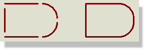

SYMBOL LIBRARIES
Introduction
The symbol libraries are used to hold both general graphical symbols for direct placement onto drawings, and also symbols for terminals, module ports and device pins.
The various types of symbol are created with different name prefixes, and thus appear to all intents and purposes to be stored in separate 'compartments' of the symbol library. A set of these objects is defined in SYSTEM.LIB and is pre-loaded into the various object selectors when you open the schematic. Thus, when you select the Terminal icon, and you see the names DEFAULT, INPUT, OUTPUT etc. you are actually accessing symbols called $TERDEFAULT, $TERINPUT, $TEROUTPUT and so on. When you place a terminal on the drawing, a terminal object is created and the appropriate symbol is assigned to it.
The significance of all this comes down to two points:
- Graphics symbols, terminals, module ports and device pins are all stored in symbol libraries (e.g. SYSTEM.LIB and the user library USERSYM.LIB). There are no special libraries for terminals, ports or pins.
- The procedures for making the various symbol types are all very similar.
Graphics Symbols
A symbol is a group of 2D graphics objects which are treated as a single object. For instance, using three lines and two arcs you can form an AND gate symbol.

Lines and curves and be joined together and made in to symbols (N.B. These are not component devices)
To make a graphics symbol
- Select one of the 2D graphics icons - e.g. Line, Box etc
- In the Object Selector select a graphics style appropriate to the type of symbol you are creating. For a symbol that will form the basis of future components, this is generally the COMPONENT style though for some symbols, such as OP AMP, where a small line is needed to link the body of the symbol to the base of a pin this would be drawn in the PIN style.If the outline of the symbol consists of lines and arcs and you want the symbol to be filled, use the path object to create the outline.
- Select and place graphic objects as required to form the symbol.
- Any graphic that needs to have a fixed appearance should be edited, the appropriate Follow Global? checkboxes unchecked and the graphics style attribute changed.
- If you want to define the origin for the symbol, select the Markers icon, click on the Origin marker in the object selector and place it where you want the origin to be. If you don't place an Origin, Proteus will default the origin to the centre of the symbol.
- Tag the objects that will comprise the port by by entering selection mode and dragging a tag-box around them with the left mouse button.
- Invoke the Make Symbol command, select a name and library for the new symbol.
- Click OK to complete the operation.
A symbol can only consist of 2D graphics objects - you cannot tag a whole section of circuitry including components, wires etc. and make that into a symbol. To manipulate circuit sections in this way, you should use the Import Section and Export Section commands.
User Defined Terminals
Proteus permits the definition of user defined symbols for use as logical or physical terminals. These are made in the same way as ordinary symbols except that you must place a Node marker to specify the position of the terminal's connection point, and a Label marker to specify the position and orientation of its net label.
To make a user defined terminal
- Select an appropriate 2D graphics icon - typically the Line icon - from the Mode Selector toolbar
- In the Object Selector select an appropriate graphics style. This will nearly always be the TERMINAL style though the BUS WIRE style may also be appropriate for small parts of the symbol.
- Select and place graphics objects as required to form the body of the terminal. Any graphic that needs to have a fixed appearance should be edited, the appropriate Follow Global? checkboxes unchecked and the graphics style attribute changed.
- Select the Markers icon. Place a Node or Busnode marker where you want the wire or bus to connect the terminal, and a Label marker where you want its net label to be. You can also place an Origin marker to define where its origin will be.
- Tag the objects that will comprise the port by by entering selection mode and dragging a tag-box around them with the left mouse button.
- Invoke the Make Symbol command, set the type to Terminal and then select a name and library for the new terminal.
- Click OK to complete the operation.
Note that the electrical type of user defined terminals will always default to passive. If you need user defined terminals to carry different electrical types you must assign them after placement with the Property Assignment Tool.
User Defined Module Ports
Module ports are the connectors used to attach wires to sub-circuits and it is possible to create user defined symbols for them. These are made in the same way as ordinary symbols except that you must place a Node marker to specify the position of the port's connection point, and a Label marker to specify the position and orientation of its label.
To make a user defined module port
- Select an appropriate 2D graphics icon - typically the Line icon - from the Mode Selector toolbar.
- In the Object Selector select an appropriate graphics style. This will nearly always be the PORT style though the BUS WIRE style may also be appropriate for small parts of the symbol.
- Select and place graphics objects as required to form the pin symbol. Any graphic that needs to have a fixed appearance should be edited, the appropriate Follow Global? checkboxes unchecked and the graphics style attribute changed. In drawing the port, you should orient it in a manner suitable to be placed on the left hand edge of a sub-circuit - Proteus will mirror it in X when it is placed on the right hand edge.
- Select the Markers icon. Place a Node or Busnode marker where you want the wire or bus to connect the port, and a Label marker where you want its net label to be. You should also place an Origin marker to correspond with where the edge of the sub-circuit will be.
- Tag the objects that will comprise the port by by entering selection mode and dragging a tag-box around them with the left mouse button.
- Invoke the Make Symbol command, set the type to Module Port and then select a name and library for the new terminal.
- Click OK to complete the operation
User Defined Device Pins
Device pins are, in fact, drawn as symbols and consequently you can define your own symbols for them. A variety of device pin symbols are supplied in SYSTEM.LIB. Nevertheless, there may be some situations in which it is appropriate to define your own.
To make a user defined device pin
- Select an appropriate 2D graphics icon - typically the Line icon - from the Mode Selector toolbar.
- In the Object Selector select a graphics style. This will nearly always be the PIN style for a standard pin or the BUS WIRE style for a bus pin.
- Select and place graphics objects as required to form the body of the terminal. Any graphic that needs to have a fixed appearance should be edited, the appropriate Follow Global? checkboxes unchecked and the graphics style attribute changed.
- Select the Markers icon. Place a Node or Busnode marker where you want the wire or bus to connect to the pin, a Pinname marker where you want the pin name to be, and a Pinnum marker where you want the pin number to be. You can also place an Origin marker to define where its origin will be.
- Tag the objects that will comprise the port by by entering selection mode and dragging a tag-box around them with the left mouse button.
- Invoke the Make Symbol command, set the type to Device Pin and then select a name and library for the new pin.
- Click OK to complete the operation.
Editing an Existing Symbol
Any type of symbol may be edited by placing an instance of it and then using the Decompose command.
To edit a symbol:
- Place an instance of the symbol. This will be a Graphics Symbol, Terminal, Module Port or Device Pin, as appropriate.
- Tag the objects that will comprise the port by by entering selection mode and dragging a tag-box around them with the left mouse button.
- Select the Decompose command. This will break the symbol into graphics and markers.
- Add, delete or edit the graphics and markers as required.
- Reconstitute the symbol according to the procedure from the previous sections appropriate to its type.
Hierarchical Symbol Definitions
The Proteus schematic will quite happily allows a symbol to contain other symbols and/or other graphic objects. This allows you to make, for instance, a NAND gate out of the previously defined AND gate plus a circle. Note that symbols defined from other symbols are not "linked" to them in any way - if the lower level symbols are changed or even deleted, this will not affect the new one. This also means that a symbol can be defined as a modification of itself without difficulty, although this will destroy the old version.